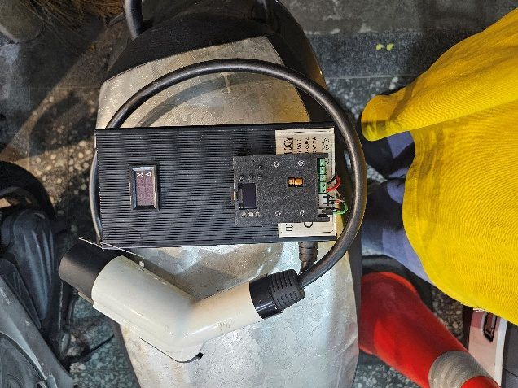
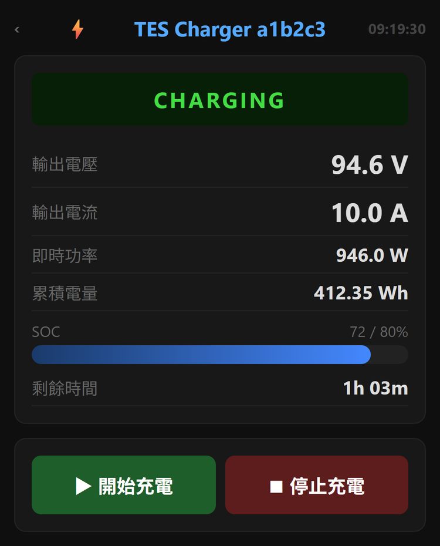

iE125 原廠充電器改裝
原廠充電器由三個部分組成：主電源、控制板、充電槍。我的做法是只保留充電槍，主電源和控制板全部換成我自己的——控制板用的就是 TES 快充控制板。
- 改裝後功率上限 1 kW / 10 A（原廠 360～600 W）
- 原廠 360 W 與 600 W 兩款充電器都能改
- 插一般 110V 插座時，1 kW 輸出離插座的容量上限（1650 W）還有餘裕
- 最容易過熱燒掉的電源板會被整個換掉，所以電源板已經燒掉的原廠充電器，只要充電槍完好，一樣可以改
- 可以連 WiFi，手機開網頁就能看即時電壓、電流、目前電量
- 可以設定「充到幾 % 就停」（例如只充到 80% 顧電池）；排程、推播、充電紀錄、OTA 更新也都有
- 這些功能要先連上 WiFi、在手機上設定才用得到；用不用、用多少，看個人需求
- 車輛本身完全不動


為什麼連控制板都換掉？
原廠控制板只負責基本充電：看不到充電狀態、不能設定充到幾 % 就停，輸出上限固定在原廠板上，而且是專車專用。換成自研的 TES 快充控制板之後：
- 手機可以看即時電壓、電流、電量，可以設定充電上限、排程和推播
- 韌體可以透過 OTA 更新，之後的新功能，改裝過的充電器也拿得到
- 功率由控制板決定，不會被原廠板限制。目前 1 kW 的上限來自原廠充電槍的線徑；換上規格更高的充電槍，就有往上加的空間（研究中那組 1.5 kW 就是這樣做出來的）
- 不再專車專用：控制板走的是 TES 通用規格，理論上只要是 TES 規格的車、而且充電器的電源電壓高於車的電池電壓，都可以使用（iE125 以外的車款尚未實測，見常見問題）
為什麼上限是 1 kW，不能再高？
因為充電槍保留的是原廠的，而 iE125 原廠充電槍的線徑太細，撐不住更大的電流。線徑撐不住就是撐不住，我不會為了數字好看去超用它，那是會出事的。
這項改裝比原廠快，但做不到「30 分鐘充到 80%」那種等級的快充。
不想在電源外殼上鑽孔的話，也可以選 XT90 版：充電槍和控制板做在同一個控制盒裡，用 XT90 接頭接到電源，不用施工。兩種做法的差別見價格與填單。

有些話要先講清楚
- 原廠充電器改裝的上限是 1 kW / 10 A，受限於保留下來的原廠充電槍線徑，這是物理限制，加錢也不會變快。
- 家用 110V 插座的容量上限是 1650 W。老舊的電線與插座長時間接近滿載有風險，這也是我設定充電器功率上限時的考量。
- 控制板只適合具備高壓直流經驗的人。整流模組的選配、充電槍的訂做、線材、保護與組裝都要自己負責。
- CAN Bus 接錯或短路，會造成車輛 BMS 永久性損壞。我在開發初期就燒過一台車的 CAN 埠，那是早期洞洞板時期外購 CAN 模組的瑕疵；現在的控制板已經是穩定的正式電路板，這條提醒是寫給要自己接線的人。
- 6 kW / 30 分鐘是我自己研究平台的實測結果，不是控制板的保證值。實際能做到多少，取決於整流模組、充電槍線徑和現場進線容量。
- 控制板與改裝皆未經 BSMI、UL 等安規認證，性質是個人研發的技術方案，不是通過認證的量產商品。
- 任何第三方補能設備都可能影響原廠保固，請自行評估。